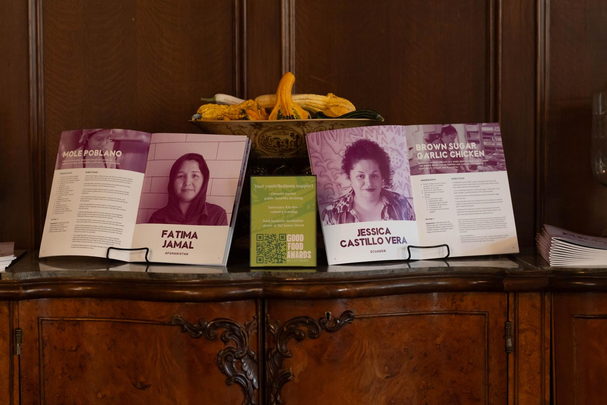
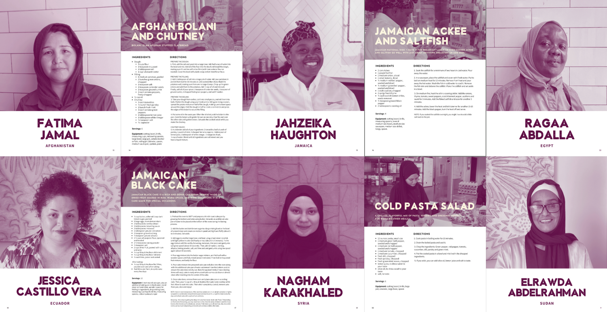
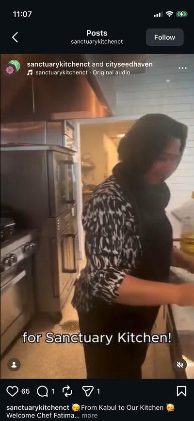
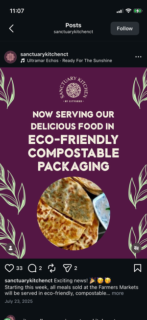

(
)
__..---..__
,-=' / | \ `=-.
:--..___________..--;
\.,_____________,./
SANCTUARY KITCHEN
Crafting a campaign that accentuated Sanctuary Kitchen’s immigrant advocacy mission and strengthened brand-customer connection
SUMMER 2025
THE PROBLEM
Sanctuary Kitchen wanted to grow revenue from its packaged foods and catering business, but many customers didn't realize that every purchase
directly supported immigrant and refugee chefs and the organization's culinary training program. The program serves immigrant chefs within the New Haven community,
jumpstarting their career in the culinary arts through job training and English language learning.
The challenge was to communicate this mission so community members better understood the impact behind the products and to convert them into loyal customers.
THE STRATEGY
Make the chefs and their stories central to the customer experience
I developed key marketing materials including a photoshoot series and cookbook featuring authentic and culturally significant
recipes from the program trainees. We showcased them at Connecticut’s weekly farmers’ markets, fundraising events, and cohort graduations
to activate the nonprofit’s mission and cultivate a stronger emotional connection that would lead to repeat purchases.


Maximizing in-person touchpoints, while inviting digital discovery
Sanctuary Kitchen's customer base skewed older, meaning that in-person conversations and print media remained the primary ways customers discovered and engaged with the brand.
However, we knew that in order to reach new and younger audiences, we had to also expand our marketing efforts across digital channels such as Instagram and Facebook, while keeping
consistent with the brand imagery. I created media posts on our sustainability efforts and immigrant chef spotlights.


THE RESULT
The campaign transformed how audiences engaged with Sanctuary Kitchen's mission by connecting them with the stories of
its immigrant chefs through photography, social media, and a branded cookbook featuring recipes rooted in their cultural heritage. Building on that engagement,
we launched hands-on cooking classes that gave customers a meaningful way to support the organization beyond dining. Together, these initiatives increased our social media engagement
and contributed to Sanctuary Kitchen's highest-revenue months in the summer.